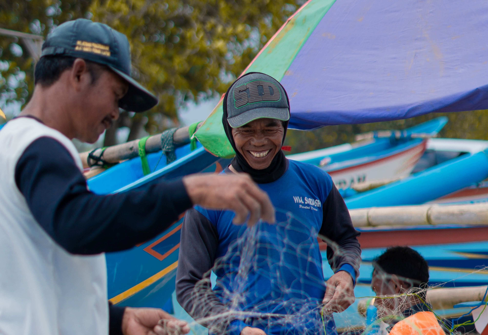

Berawal dari rasa cinta terhadap alam lautan di
Indonesia. Jutaan harta karun tersimpan di Bumi Pertiwi. Kekayaan serta keindahan yang terpancarkan
olehnya menjadi daya tarik bagi wisatawan.
Berawal dari rasa cinta terhadap alam lautan di
Indonesia. Jutaan harta karun tersimpan di Bumi Pertiwi. Kekayaan serta keindahan yang terpancarkan
olehnya menjadi daya tarik bagi wisatawan.
Tercipta rasa peduli untuk memajukan dan mempopulerkan
pariwisata
bahari serta UMKM di bidang perikanan Indonesia. Oleh karena itu, EksploraSea hadir sebagai digital
nautical untuk masa depan e-fishery di Nusantara.
Tujuan kami
ialah membangkitkan pariwisata serta pelaku ekonomi industri kreatif terutama di bidang perikanan dan
kemaritiman. Dengan EksploraSea, konsumen dapat membeli hidangan segar hasil tangkapan nelayan lokal,
seperti ikan, udang, kepiting, dan lainnya.
Tak hanya itu, konsumen juga dapat membeli
cenderamata, reservasi berbagai macam hotel ataupun resor, membeli tiket wisata bahari, menyewa
peralatan menyelam atau memancing, dan juga kursus di bidang water sport. Semua itu dapat
diakses melalui satu aplikasi bernama EksploraSea.